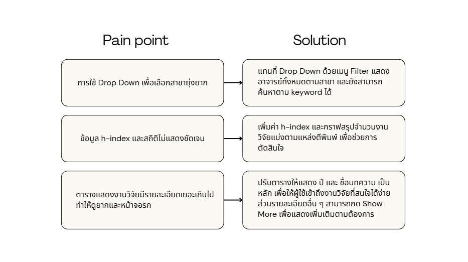
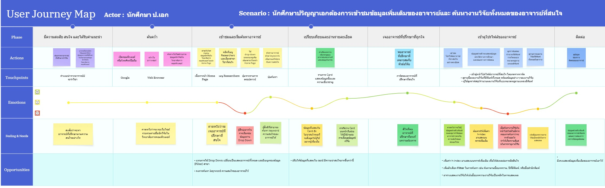
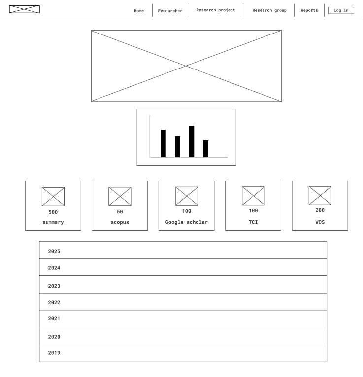
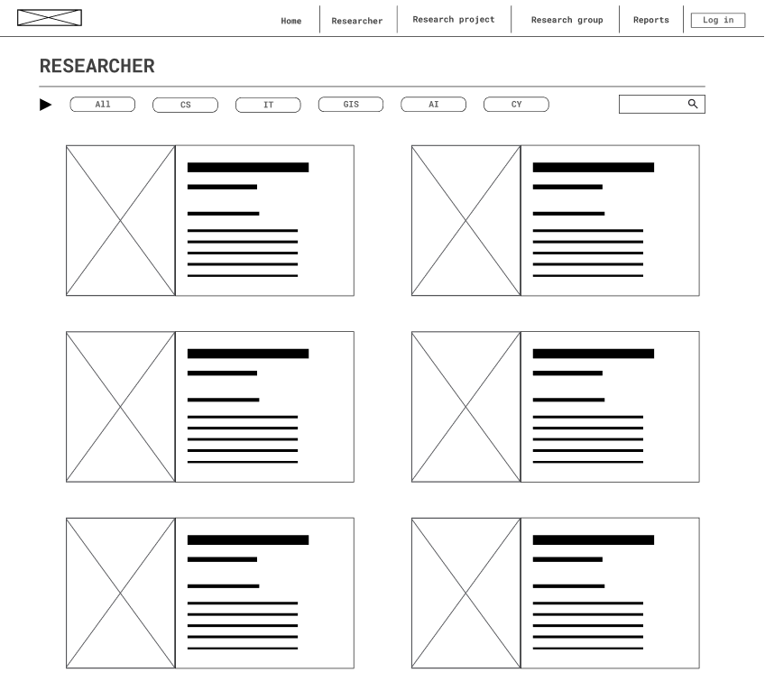
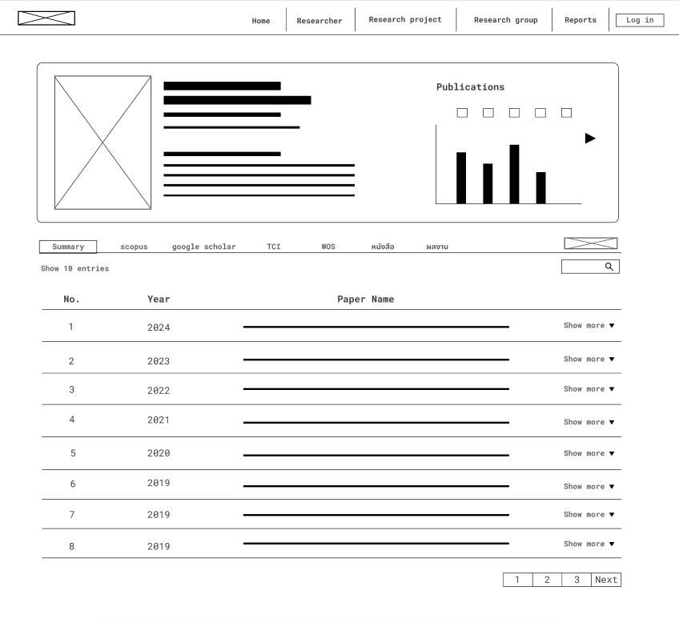
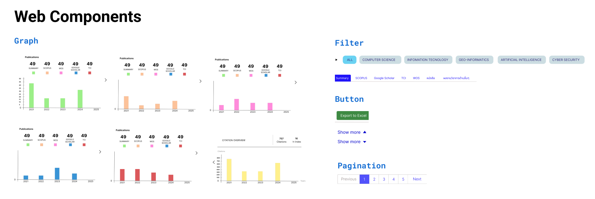
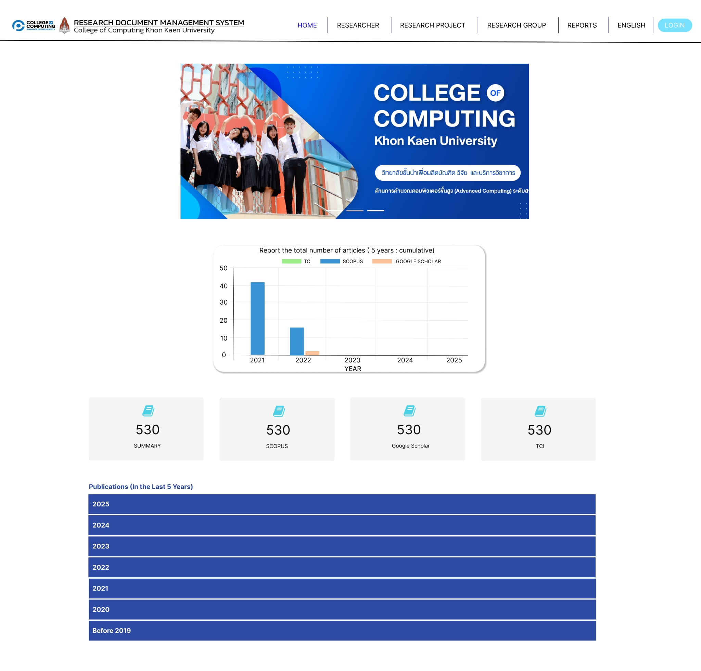
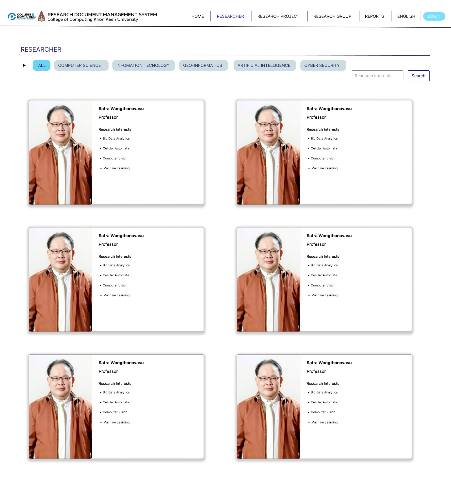
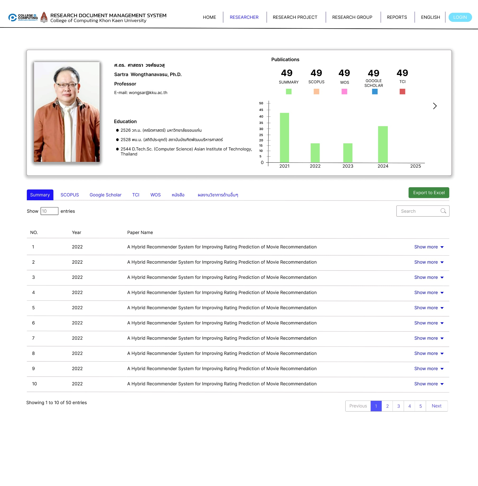

Research Information Management System

Project Overview
This project focuses on developing a research management system for the College of Computing. The
system aims to collect research publications and their publication status from international
academic databases such as Scopus, Web of Science (WOS), Google Scholar, as well as national
databases like TCI.
The system is developed using Agile and Scrum methodologies, with work
divided into 2-week sprints. A key task includes improving the UX/UI to meet user needs by
conducting user interviews and continuously refining the system based on feedback.
Goals & Objectives
- Retrieve research publications and publication status from Scopus, Web of Science (WOS), Google Scholar, and TCI databases.
- Improve the UX/UI to be user-friendly and meet user requirements.
- Develop the system using Agile and Scrum methodologies for continuous improvement.
Design Process
1. Research & Analysis
Pain point & solution

User journey

2. Wireframing



3. Design System

4. Prototyping
Design Gallery


